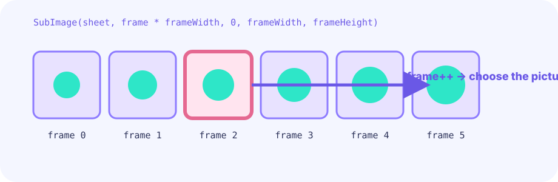

Choose a state
Ground and speed select idle, run, or air.
★★★☆☆ / PLAYABLE
Choose display frames from idle, run, and air states, then advance the run cycle with speed.
FIRST-TIME READER
Find where this one line is used, then follow how its value changes on screen. This is the shared game-state boundary: add rules in Update, then choose any independent renderer in Draw. The numbered steps below add one system at a time.
ONE RULE TO TRACE
Match the explanation to this line, then test the change in the game.
frame := tick / frameDuration % frameCount
PLAY FIRST
Choose display frames from idle, run, and air states, then advance the run cycle with speed.
DEEP DIVE
A single picture sliding across the screen feels stiff. Count ticks while running and alternate contact, squash, and push-off poses every few frames.
Ground and speed select idle, run, or air.
tick / 7 holds each drawing for seven frames.
Landing squash and an airborne stretch clarify motion.
SYSTEM LAB
A single picture sliding across the screen feels stiff. Count ticks while running and alternate contact, squash, and push-off poses every few frames.
START
THE UPDATE / DRAW BOUNDARY
Read keys and touch, then change positions, HP, gauges, timers, boards, and queues. Rules and decisions live here too.
input → rule → change gameRead the finished game state and place pictures, text, and effects. It never changes game state.
read game → project pixelsFor this lesson, put a new rule in Update (or a pure helper called by Update). Draw only shows the result of that rule.
ONE GAME, OPEN-ENDED PRESENTATION
Update and the game struct own the facts of the game. The views below observe the same autoplaying position, box, and goal at the same time. Only Draw differs, and these views can be replaced by any other presentation.
GO + EBITENGINE
This is the central rule from the playable game.
if !grounded { frame = airFrame } else if math.Abs(vx) > 0.4 { frame = (tick / 7) % 3 }Change one value and compare the feel or difficulty.
tick / 7 holds each drawing for seven frames.
Landing squash and an airborne stretch clarify motion.
FEEDBACK